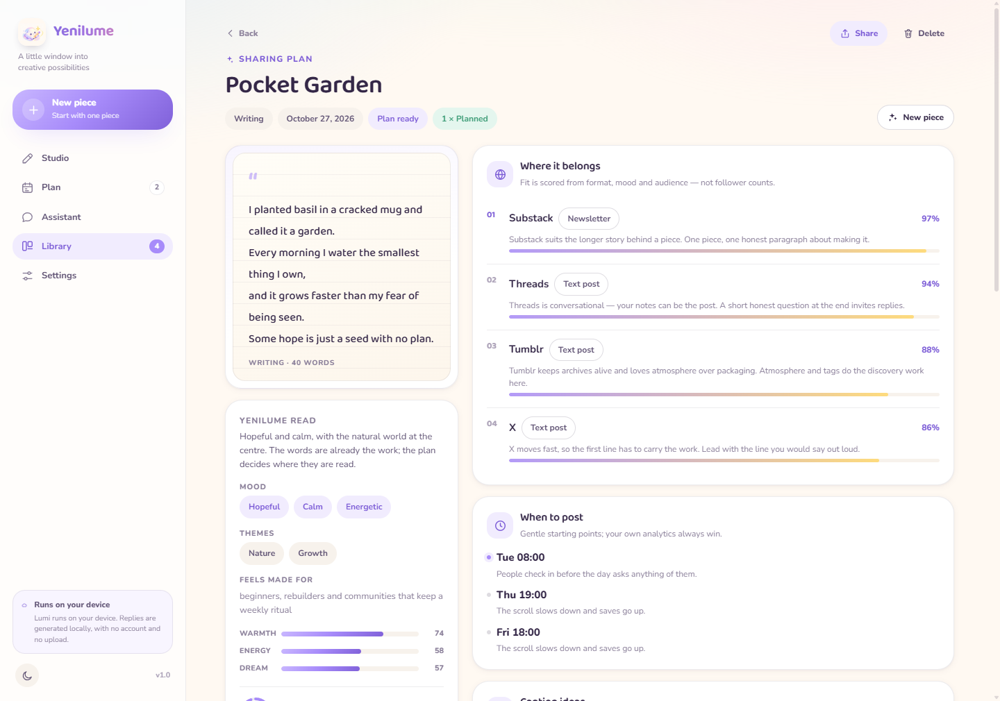
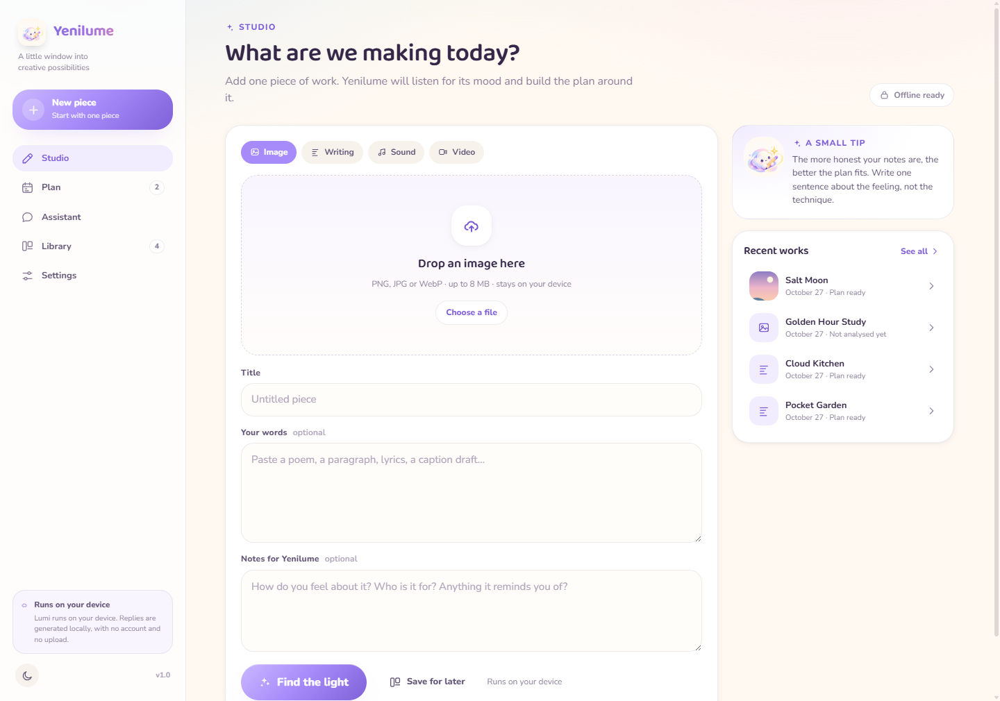
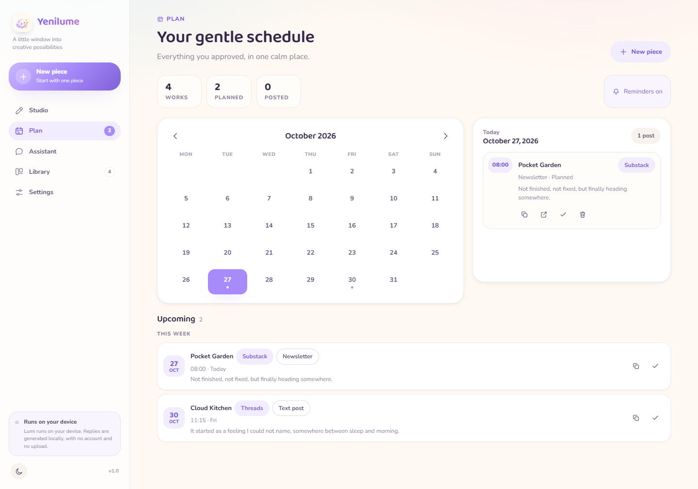
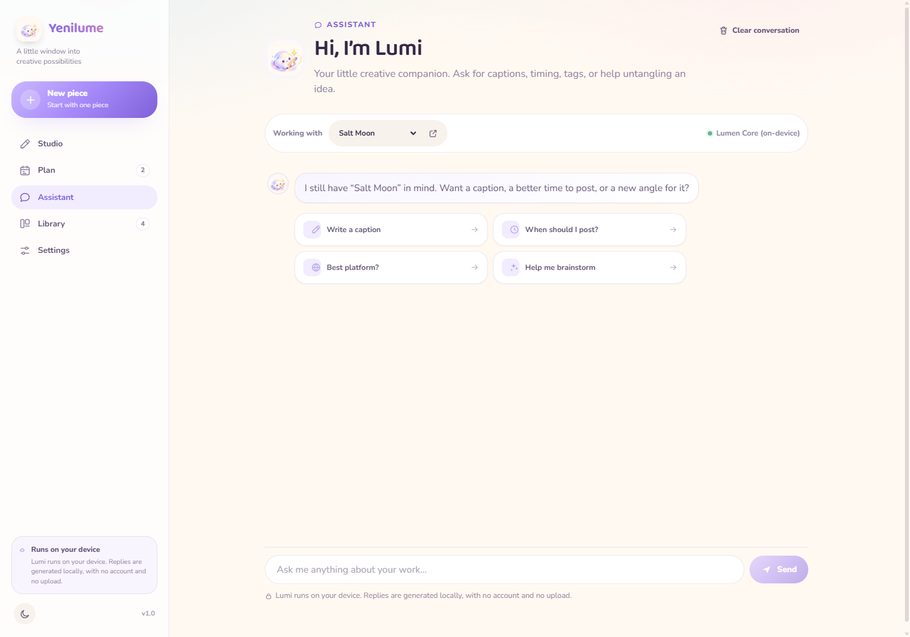
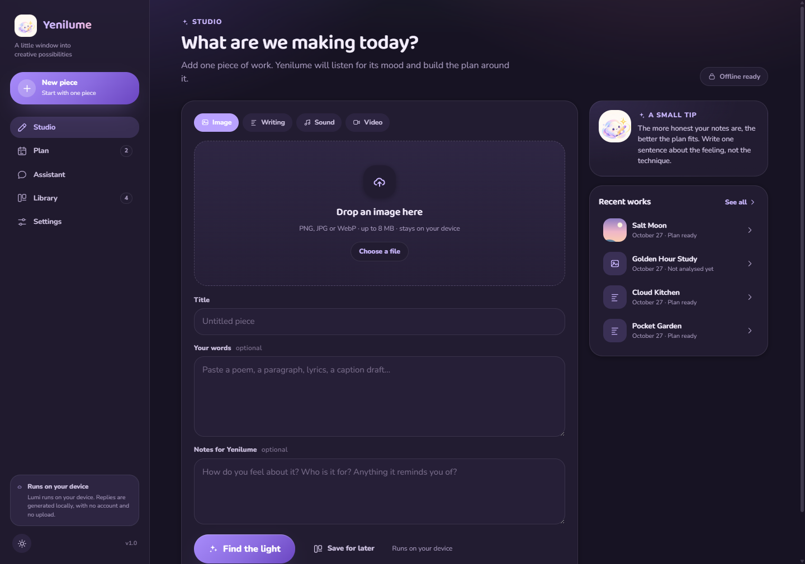
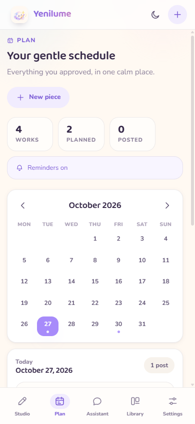

One calm canvas for any idea
Type, paste or drop an image. Yenilume estimates the mood, pulls a palette from your picture, suggests directions — and explains why, in plain language.
A creative companion
Yenilume reads what you're making — a lyric, a paragraph, a photo — and answers with a mood, a palette, a caption and a gentle plan for sharing it. All on your own device.

Small studio, big imagination
No dashboards to configure, no prompt engineering. Just a warm place to put an idea and a few thoughtful tools around it.
Type, paste or drop an image. Yenilume estimates the mood, pulls a palette from your picture, suggests directions — and explains why, in plain language.
Pick TikTok, Instagram, YouTube, Pinterest, X or LinkedIn and the days you have. Get time-aware slots with a short reason for each, then tick them off as you go.
Ask the assistant for a nudge, shuffle a spark from the idea deck, or get a pocket pep talk. It works with the network switched off.
Search, filter drafts against planned pieces, reopen any work in one tap, and export a single JSON file when you want a backup.
Lavender, Cloud, Mint, Banana, Baklava and Blush — each with a carefully built dark variant, generous contrast and reduced-motion support.
Every label, tip, reason and caption is translated. Nothing leaves the machine, and optional external models are off by default and documented.
A little tour
Paste lyrics, a paragraph, or drop a photo of a sketch. Yenilume reads it locally, finds the feeling, and offers directions you can actually use — with the reasoning shown, not hidden.

Choose where you want to share and how many days to spread it across. The plan lands in a soft calendar with a reason for every slot, so nothing feels arbitrary.

Ask for a first line, a title, a colour story or a reason to keep going. The assistant, the idea deck and your library all live in the same quiet place.

The design system
Colours, radii and type come from the same tokens the apps use, so this page, the Windows app and the mobile apps feel like one little world.
Tap a mood — the whole page warms up to it.
Baloo 2 for the hand-made moments, Nunito for the long reads. Both are bundled.
Yenilume
The quick brown fox brings a little light to the page — and keeps every label readable at 14px.
28px0 18px 40px1px999pxNot an inversion: plum surfaces, lavender accents and contrast that stays readable — for the late, quiet hours.

One ecosystem
One React + TypeScript codebase, wrapped in Electron for Windows and Capacitor for mobile. Lumen Core — the analysis engine — is plain TypeScript, so it runs everywhere, offline.
A frameless, rounded window with native menus and a secure app protocol. Installer and portable build included.
Download the Windows installernpm run desktop:buildA Capacitor shell with bottom navigation, native sharing and gentle haptics, tuned for one-handed use.
npm run mobile:androidThe same shell for iOS, with safe-area aware layout and reachable controls. Open it in Xcode on macOS to sign and run.
npm run mobile:ios
The same components rearrange into a thumb-friendly shell: a bottom dock, larger tap targets, and a calendar that folds into a tidy list. One design system, three native-feeling homes.
The browser preview is the same UI. Builds are produced locally for now — no store listings yet.
Local by design
Words and pictures are analysed inside the app by Lumen Core — small, deterministic and explainable. No account, no uploads, no analytics. Optional external models can be connected in Settings, off by default.
Ready when you are
Start in the browser, or build the desktop and mobile apps from source. Your first idea is already waiting.
Concept & creative direction by Sema Nur Biçki (smnrbck) · Creative assistance by xiondigital